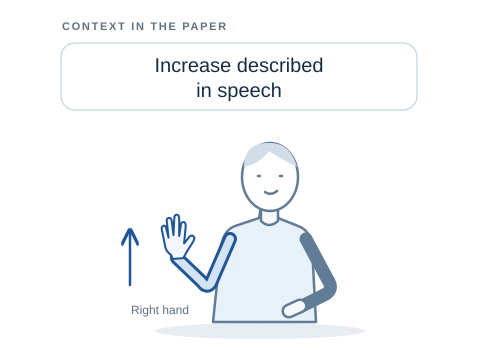

Semantic Motion Anchors:Bridging Motion and Meaning in Co-Speech Gestures
NeurIPS 2026
Varsha Suresh1,* · Mohammad Mahdi Abootorabi3,4,5,†,* · Mohamed Salman1
M. Hamza Mughal2 · Christian Theobalt1,2 · Ashwin Ram1 · Jürgen Steimle1 · Vera Demberg1,2
1Saarland University 2MPI for Informatics, Saarland Informatics Campus 3University of British Columbia 4Vector Institute 5Zuse School ELIZA * Equal contribution
Author funding
†This author is supported by the Konrad Zuse School of Excellence in Learning and Intelligent Systems (ELIZA) through the DAAD programme Konrad Zuse Schools of Excellence in Artificial Intelligence, sponsored by the Federal Ministry of Education and Research.
Working draft · Comparison and application videos are pending.
01
Beyond how a gesture moves
Movement tells us what the body does. Speech helps us understand what the gesture means.

Physical form
Right hand rises to chest level with open palm.
What can we observe?
Communicative intent
Emphasizing the increase described in speech.
What does it convey in this context?
Semantic motion anchor · Paper example
Right hand rises to chest level with open palm,emphasizing the increase described in speech.
Anchor text quoted from Suresh et al., §3.1, p. 4 (CC BY 4.0). Drawing adapted from that textual example; not an original paper figure or a SEMANTIX sample.
02
Abstract
Learning a shared representation between spoken text and gesture is central to co-speech gesture retrieval, synthesis, and understanding, but remains challenging for semantically meaningful gestures whose communicative intent is not captured by motion alone. Direct contrastive alignment between transcripts and continuous motion embeddings often overemphasizes low-level kinematics and misses the symbolic content of semantic gestures. We propose semantic motion anchors, natural-language abstractions of gesture motion capturing physical form and communicative intent. Our method discretizes 3D gestures into body-hand motion primitives, verbalizes them into structured descriptions, and grounds them in the transcript to provide auxiliary contrastive supervision. On BEAT2, our method improves text-to-gesture R@1 by 8.2% over a direct text-motion baseline and outperforms prior retrieval approaches on text to gesture and gesture to text retrieval directions. Beyond aggregate retrieval metrics, semantic motion anchor supervision helps retrieve gestures that are semantically meaningful for the spoken query, rather than defaulting to generic motion patterns. A downstream retrieval-augmented gesture generation study showed that users significantly preferred gestures retrieved by our approach over a retrieval-augmented generation baseline, demonstrating that semantically grounded retrieval translates to gestures that better convey communicative intent in downstream generation.
@inproceedings{suresh2026semantic,
title = {Semantic Motion Anchors: Bridging Motion and Meaning in Co-Speech Gestures},
author = {Varsha Suresh and Mohammad Mahdi Abootorabi and Mohamed Salman and M. Hamza Mughal and Christian Theobalt and Ashwin Ram and J{\"u}rgen Steimle and Vera Demberg},
booktitle = {Proceedings of the 40th Annual Conference on Neural Information Processing Systems (NeurIPS'26)},
year = {2026},
url = {https://arxiv.org/pdf/2605.30608}
}
Citation for NeurIPS 2026.
08
Explore more
More publications and datasets from Varsha Suresh and collaborators.
·arXiv
Do Motion Tokenizers for Co-Speech Gesture Generation Encode Gesture Semantics?
Varsha Suresh · Divij Jain · Jia Liu · M Hamza Mughal · Vera Demberg